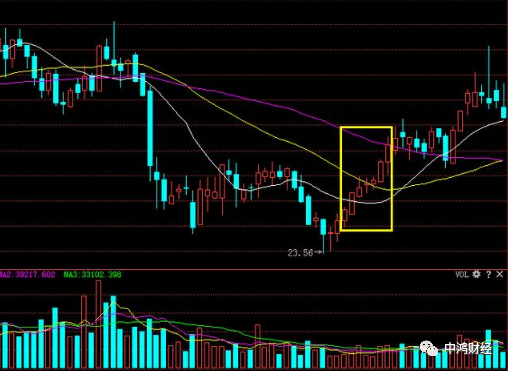
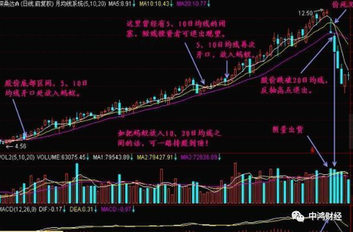
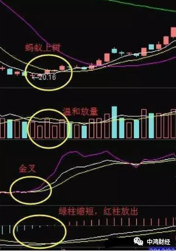
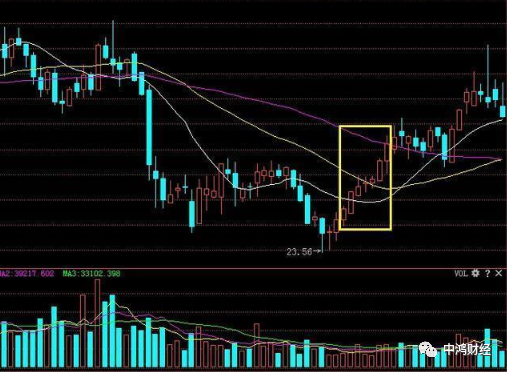
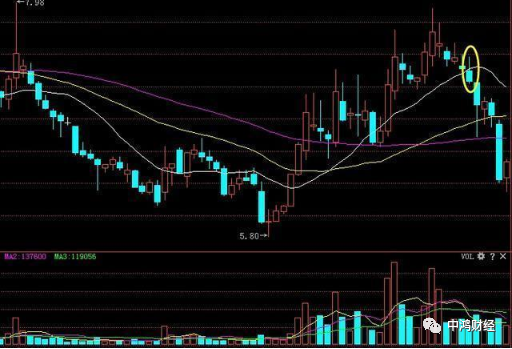
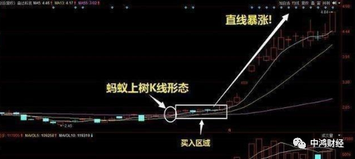
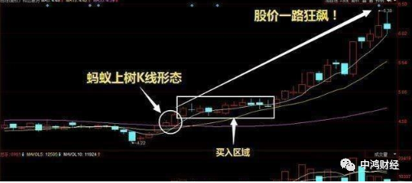
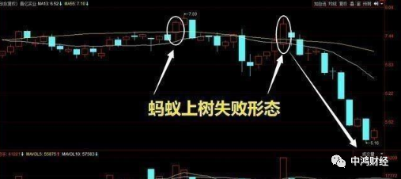

一旦股票出现“蚂蚁上树”形态，散户可大胆跟进，股价即将大涨
原文: https://mp.weixin.qq.com/s/zWCJFUSpup3VPn1nLngxXA
前言：入市不久的散户，常见的操作是全仓买入、卖出，这样做的弊端显而易见。
禅师和徒弟
在一个山谷的禅房里有一位老禅师，他发现自己有一个徒弟非常勤奋，不管是去化缘，还是去厨房洗菜，这个徒弟从早到晚，忙碌不停。 假如你生命是一只空碗，你会先放进什么？ 这小徒弟内心很挣扎，他的眼圈越来越黑，终于，他忍不住来找师傅。 他对老禅师说：“师傅，我太累，可也没见什么成就，是什么原因呀？” 老禅师沉思了片刻，说：“你把平常化缘的钵拿过来。” 假如你生命是一只空碗，你会先放进什么？ 小徒弟就把那个钵取来了，老禅师说：“好，把它放在这里吧，你再去给我拿几个核桃过来装满。” 小徒弟不知道师傅的用意，捧了一堆核桃进来。这十来个核桃一放到碗里，整个碗就都装满了。 老禅师问小徒弟：“你还能拿更多的核桃往碗里放吗？” “拿不了了，这碗眼看已经满了，再放核桃进去就该往下滚了。” “哦，碗已经满了是吗？你再捧些大米过来。” 小徒弟又捧来了一些大米，他沿着核桃的缝隙把大米倒进碗里，竟然又放了很多大米进去，一直放到都开始往外掉了。小徒弟才停了下来，突然间好像有所悟：“哦，原来碗刚才还没有满。” “那现在满了吗？” “现在满了。” “你再去取些水来。” 小徒弟又去拿水，他拿了一瓢水往碗里倒，在少半碗水倒进去之后，这次连缝隙都被填满了。 老禅师问小徒弟：“这次满了吗？” 小徒弟看着碗满了，但却不敢回答，他不知道师傅是不是还能放进去东西。 老禅师笑着说：“你再去拿一勺盐过来。” 老禅师又把盐化在水里，水一点儿都没溢出去。 小徒弟似有所悟。老禅师问他：“你说这说明了什么呢？” 小和尚说：“我知道了，这说明了时间只要挤挤总是会有的。” 老禅师却笑着摇了摇头，说：“这并不是我想要告诉你的。” 接着老禅师又把碗里的那些东西倒回到了盆里，腾出了一只空碗。 老禅师缓缓地操作，边倒边说：“刚才我们先放的是核桃，现在我们倒着来，看看会怎么样？”
老禅师先放了一勺盐，再往里倒水，倒满之后，当再往碗里放大米的时候，水已经开始往外溢了，而当碗里装满了大米的时候，老禅师问小徒弟：“你看，现在碗里还能放得下核桃吗？
老禅师说：“如果你的生命是一只碗，当碗中全都是这些大米般细小的事情时，你的那些大核桃又怎么放得进去呢？” 小徒弟这次才彻底明白了。 如果您整日奔波，异常的忙碌，那么，您很有必要想一想：“我们怎样才能先将核桃装进生命当中呢？如果生命是一只碗，又该怎样区别核桃和大米呢？” 如果每个人都清楚自己的核桃是什么，生活就简单轻松了。我们要把核桃先放进生命的碗里去，否则一辈子就会在大米、盐、水这些细小的事情当中，核桃就放不进去了。
交易如人生，有些事情都是命中注定的，比如亏损，有的人视亏损为洪水猛兽，尤其是在经历过几次爆仓以后，在很多时候其实不是亏损有多么的容易，而是知识因为我们选择了习惯性的漠视。
明明有50%的概率，为什么给我们的感觉确实90%的冲击？什么是交易的能力？盈利不是，碰上大牛市谁都可以赚钱，但是不代表市场上所有的人都可以赚钱了，赚谁的钱去？亏损才是！
倒了，能继续站起来战斗，而不是等死，这就是交易中最高的能力，亏损之后的冷静是最珍贵的，冷静可以让自己认真彻底的反思，没有设止损点吗？设了止损点没有执行吗？入场点有问题吗？是系统正常的开仓信号吗？答案就在这些问题里面。
交易最大的魅力在于，他总是能够及时的奖赏乐于知错就改的在交易者，交易的路上能遮风挡雨的只有自己的双手，想要赚钱，你必须学会比别人更了解自己。
揭开假象：交易中适合你的交易方法是否就是最好的？
“适合自己的交易方法就是最好的”，这句话并没有错，是很正确的，而且猛一听，很有理，可是你真的知道哪种方法最适合你么？你知道，交易方法有多少种么？你已经尝试了多少种方法？你怎么知道这种方法最适合你，其他方法就不适合你么？你都没有去尝试其他方法，如何知道其他方法不适合你呢？
其实，大部分时候，初始我们认定最适合自己的，都不适合自己，你需要经历许多路程、方法，然后才能发现你自己真的适合什么，这是需要不断的磨合，不断的选择，经历过很长一段路后，梳理、过滤、回顾，才最终知道什么才真正适合自己。一见钟情，往往初始有激情、火花，但一旦闪婚，各种矛盾会涌现，很难幸福，很容易闪离。幸福的婚姻，总是不断寻找和磨合的过程，有一个看起来不是一见钟情的，但也看起来可以，各方面条件总体适合自己，在磨合的过程中，中间不知何时生出了爱情的火花，这样的婚姻才会比较稳定、长远。
如果你的交易经历不丰富，你很难知道哪种交易风格适合你，你不可能闭门造车，硬想出这种你的交易风格是什么。你必须需要尝遍多个交易风格，最终从中找到和自己的性格、生活相匹配的，就如同你找对象一样，你很可能会找过好多个对象，但是交往多个之后，你会从中找到一个适合自己的。
刚开始玩股票，几乎所有人都是从短线开始，刚开始，大家都害怕拿久了有风险，都认为短线交易适合自己，绝大部分人总拿着“适合自己就是最好的”来反驳，总说虽然趋势好，但不适合他们。实际上，是否适合，不是你说的算，而是你的账户说的算，这句话”适合自己的就是最好的“，成了你固步自封、不思进取的借口，不愿意接受新的思想和新的方法，为自己的懒惰找到了很充足的理由，最后最终把自己封死在自己造好的闭门车中。
我们需要开阔的视野，需要看一看世界。每一个人初始时，都觉得某某方法最适合自己，犹如找对象，初恋时，认定她最适合你，山盟海誓，非她不娶，可事隔多年，回过头去看，你觉得是否幼稚可笑？
什么是“蚂蚁上树”形态?
“蚂蚁上树”是135均线战法中的第二阶段,指股价企稳后,缓慢上升,同样这也表示主力开始吸筹,当13日均线开始有下跌开化寺走稳,股价突破了13日线,后将股价送上55日均线,这样的连续上升的小阳线称之为“蚂蚁上树”。

“蚂蚁上树”技术形态特征
- 小阳线缓慢推进
- 低量匍匐:成交量很小
- 大盘要处在上升趋势中
- 股价处在反弹趋势中
- 短线组上穿中线组,中线组走平上翘
- 超过5点的大阳线起来,带3倍以上的成交量

买进时机
- 形态出现后，密切关注。
- 股价回调的第一根阴线或者说第二根阴线，轻仓试探。
- 回调后股价形成双覆盖阳克阴之后，半仓跟进或重仓出击。
操作条件
- 反弹阶段的“蚂蚁上树”一般出现在个股的回调末期或者是反弹的初期。主升浪阶段的“蚂蚁上树”出现在刚刚突破60日均线以上的个股，属于上升行情的中段;
- 成交量必须是温和放量;
- KDJ指标形成金叉在50以下，刚刚形成最好，并且J线拐头向上呈现出大于45°角的形态向上。
- MACD指标下方绿色柱子逐渐缩短并且由绿色柱向红色柱转换最好.

“蚂蚁上树”的买入时机
“蚂蚁上树”出现的时候，股价突破了34日线的时候，这个时候可以密切关注，股价随后突破55日线，股价开始回调的的第一或第二根阴线，轻仓试探。股价最后形成“阳克阴”之势，即一根大阳线盖过之前的阴线，可以可半仓或重仓出击。

“蚂蚁上树”的卖出形态
“蚂蚁上树”的卖出信号，当13日线开始逐步开始走软的迹象，或量增而升势凝重时，这时可以随时准备离场，一旦有效跌破，必须无条件离场。如果没有来的急离场，可等待反弹再离场。

实战案例讲解
案例一

如上图所示，奋达科技这只股票前期一直处于横盘整理的趋势，当K线成功突破13日和55日均线后，此时投资者可以把握这个区域的价格买入，后市会直接来个直线暴涨。
案例二

上图所示，科达股份这只股票也是一样前期曾经出现过蚂蚁上树形态的个股之一，当蚂蚁上树形态出现后，投资者可以轻仓尝试买入，如果股价回调的第一或者第二根阴线可半仓跟进。回调后k线形成阳克阴之势或突破前期高点即可重仓出击。
蚂蚁上树失败案例

上面这只股票，趋势形态看起来好像是蚂蚁上树K线形态，其实不然。虽然这只股前期也是出于横盘的行情，股价也顺利突破了13日和55日均线，但因为突破后回调的力度不够，而蚂蚁上树K线形态的要求是突破13日均线并且连续上攻的小阳线不能低于5根，所以各位投资者要仔细观察好，别天真的以为突破了13和55日线的股票就重仓砸进去，否则会死的很惨。
投资成败的关键总结
任何的学问，观念永远是最重要的...技术分析最忌迷信，认为“这个指针到多少时，一定会怎么样”的，下场通常不好。
交易的目的是什么，不是当一个神准的算命师，而是要赚钱。你之所以来交易，目的是赚钱，而不是让自己变成一个预言家受人尊敬景仰。我认为许多人失败的原因不在看错行情，看错行情是交易的一部份，没有人可以避免看错，因为他不是神，许多老手进出了老半天，交易了10几年，报酬率还是负的，因为他仍停留在“猜行情”阶段，最大亏损与最大利润不成比例。只要简单问一个人他交易中每笔最大利润是多少，每笔最大亏损是多少，就知道他是赢家还是输家。
策略非唯一，你也可以自己设计，但务必以风险为考量，也就是说，你的策略必须经的起考验，别让自己承受过大风险。那些会弄到断头，会赔的一踏胡涂的最大问题，都是在策略，看错行情，每个人都会，但高手厉害的地方就是他可以承受不断的犯错，策略的拟定，真的很重要...
散户之所以涨时赚钱不够贴跌时的钱，原因在于在涨升段时换股频繁，赚的都是一小段一小段利润，但是头部震荡完后，如果是下跌几乎都是以陡峭的角度杀盘，几天内就把一个月赚的赔光。“策略的目的在让我们可以控制风险，而不是获取最大利润”。底部在哪？这问题事实上根本就不重要，也不用知道，也没人知道。专心在自己的买卖点上，何时可加码、何时该停损、如果涨上去该如何做？.这才是较实际的！
下跌浪时，找支撑是件吃力不讨好的事，下跌的速度比上涨的速度大3倍！因为，恐惧比乐观还可怕，况且底部确认不易，需同时看个股及大盘。我认为静观其变，静待落底，如此简单。
许多人，认为幸运之神永远在其身边，每把都认为可以胡，所以常常点炮，却抱怨运气差...不须赚的比别人多，来证明自己厉害，长期下来都能赚，就是赢家，即使之前赚了十笔，最后一笔赔光还是赔。赚的稳，才心安！
交易计划的特点
首先，计划要有预见性。我们制定交易计划是对未来所作出的预见，所以在制定计划前，必须对各种可能出现的情况有清醒的认识，对交易的目标、措施、方法有一个正确的设想。因此，没有预见性，也就没有计划，预见性是计划的主要特点。
其次，计划要有程序性。在制定交易计划中，先做什么，后做什么，要有周密的时间安排与要求。执行交易计划时要有阶段性和轻重缓急。因此，制定交易计划必须有每个阶段的时间要求及相应的安排，要体现计划的周密和程序性。
交易计划所包括的环节
你将在哪些市场交易？使用哪种分析工具？你进入交易的市场分析情况是怎样的？入场交易的条件是什么？你将承担多大风险？退出策略是什么？你预期的操作时间和绩效是怎样的？行情发展将会发生哪些可能？如何实现交易目标？
1、你将在哪些市场交易
对于交易市场的选择，是要根据你的资金实力以及交易策略来决定。比如你有3万元，那么你就不适合选择沪深来交易。或者你是顺势交易者，那么就不能选择处于振荡行情的品种来交易。当然，进行这项工作的前提是，你要事先确立自己的交易策略。
2、使用哪种分析工具
关于分析工具，也许你采用的是技术分析中的某种或是基本面分析，但无论采用哪个，你都需要明白这个分析工具的原理，并且对于它的可行性和成功概率，进行过充分研究和测试后方可运用。
3、你进入交易的市场走势情况是怎样的
通过分析你要明白的是，市场现在运行状况是什么状态？是否符合你的交易条件？你对市场未来走向预期如何？面对目前的行情，其他人的想法是怎样的？
4、入场交易的条件是什么
入场交易的条件也即交易信号，它必须是基于牢固的、合乎逻辑的理论基础，必须清晰和唯一，不能模棱两可。并且它和分析方法一样，也要经过充分的评估和测试。你要明白成功的交易信号是什么发展情况？失败的交易信号又是什么发展情况？
5、你将承担多大风险
在交易这行最重要的是要学会保护自己，因此任何一次交易前，都要明确自己在这笔交易中，将投入多大资金，能够承受多大的风险，也就是说如果你判断失误的时候，你所能承受失误所带来的最大损失是多少？这笔交易失误所带来的损失你是否能够承受？是否会给你带来不良的影响？
6、退出策略是什么
退出策略包括三个方面：
一个是判断失误退出策略，也即止损策略；
一个是获得利润成功完成交易的退出策略；
一个是在一段时间内价格的变化，并没有如你预期的那样移动时如何退出的策略。
这里面最难的是止损策略的制定和执行，止损设立的前提是你要明白什么情况下，你的判断是错误的，所以在之前我们提到你一定要明白判断工具的原理。关于止损执行难，是因为止损涉及对自己先前判断的否定以及接受资金损失的现实，显然这对交易者是个极大的挑战，所以止损的执行远难于止盈的执行。
7、你预期的操作时间和绩效是怎样的
当你开始一笔交易时，你对它的未来发展要有一个时间和价格移动目标的预期，这个预期对你今后的监测至关重要。
8、行情发展将会发生哪些可能
我们知道行情的发展是不确定的，所以市场未来到底有多少可能发生，我们心里一定要有个预见，一方面这涉及你的资金管理，如果你能够把行情发展的不确定性一直放在心里，那么你决不会满仓操作，因为没有人能够确保意外不会发生。另一方面多方位的预期可以减少情绪性和突发性决策交易的可能性。
9、如何实现交易目标
在这次交易任务中，你是否打算采取加仓的方式加大交易成果，如果是的话，你计划在什么情况下加仓？如果加仓失败，你采取何种退出策略？是部分还是全部仓位退出交易？
明确和完成了以上工作后，交易计划的制定也就基本完成。然而，这只是一笔交易的良好开端，更重要的工作是坚决而迅速地执行你所制定的这个交易计划。虽然说在所有交易者当中，有的交易者从来没有制定过交易计划，但是不能否认的是，太多的交易者却都从来没有执行过自己辛辛苦苦制定的交易计划，他们所进行的交易都是他们从来没有计划过的。
这其中的原因来自两个方面，一个是思想上的错误认识。一个是缺乏自律精神。一直以来，很多交易者都把损失与否做为衡量交易成功与失败的标准，正是这错误观念使得人们的行为偏离了正轨。衡量交易成功与否不该用资金损失与否来界定，而要用是否执行了自己的计划、是否控制了风险来界定， 如果一笔交易你能够按照计划执行，那么这笔交易即使是亏损出局，也是成功的交易。
最后需要说明的是，交易计划和交易日记一样，也是需要不断检查和检讨的，在定期检查和检讨中，你会发现自己有哪些疏忽的的方，有哪些需要改进的地方，经过完善和改进，使自己的交易绩效一步步得到提高。